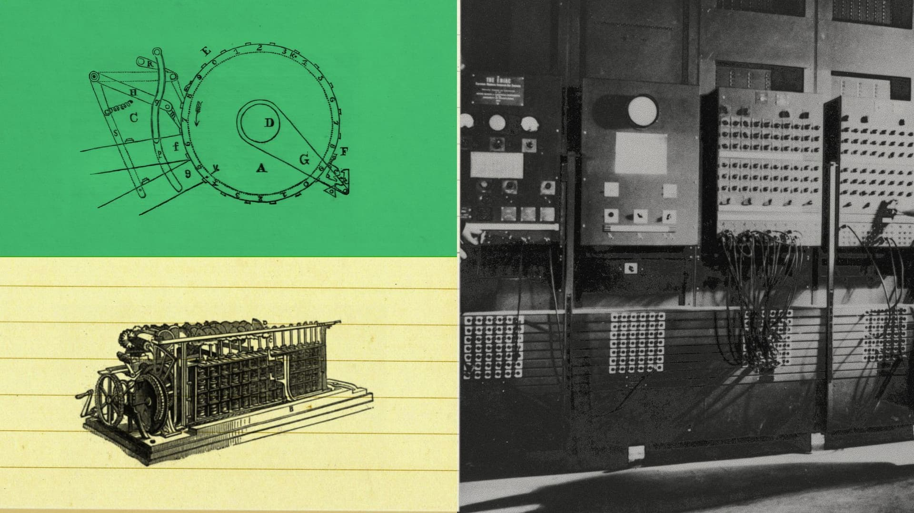
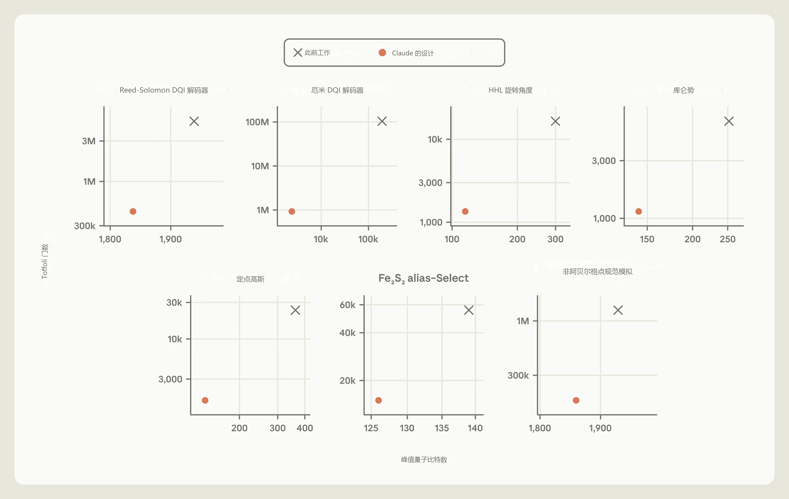
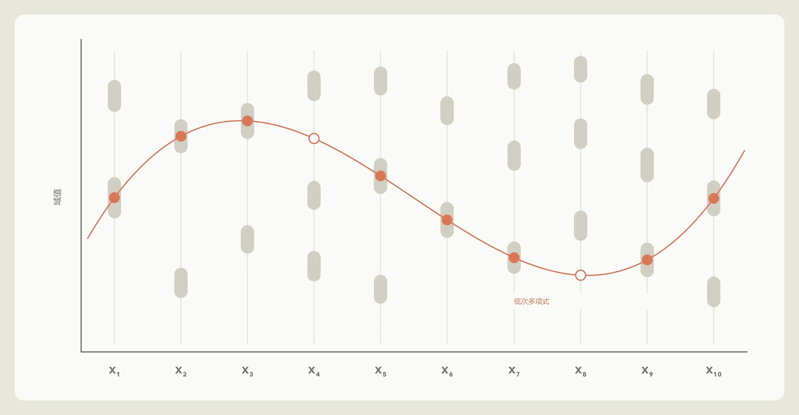
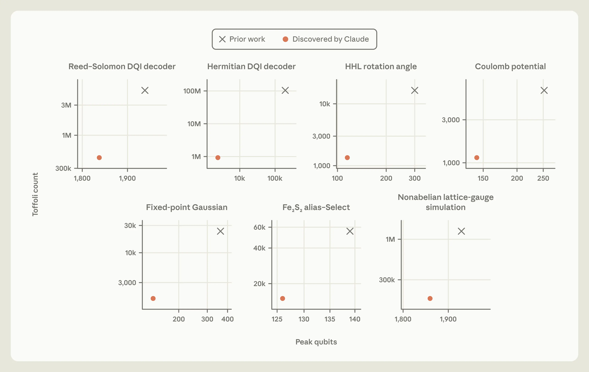
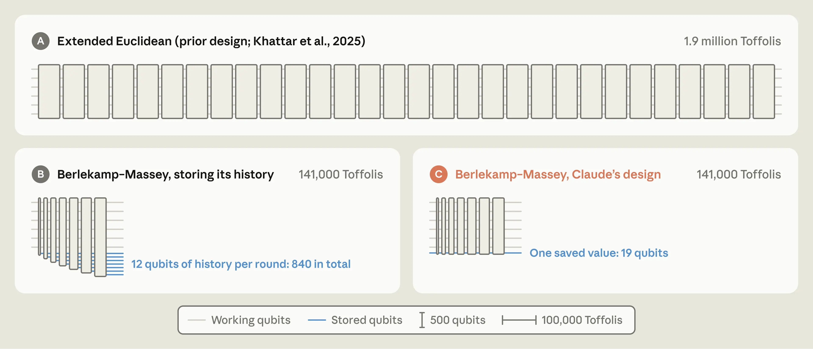

用 Claude 设计更高效的量子电路
📖 中文摘要
专业术语注解
量子比特（qubit）：量子计算机存储信息的基本单元，可利用叠加态同时处于多个状态Toffoli门：量子电路中运行成本最高的多比特门之一，其数量是估算计算耗时的标准方法逆计算（uncompute）：把生成中间结果的计算反向运行以清除信息，避免残留破坏最终结果模逆：模算术下的除法，求x使ax≡1（mod p），是椭圆曲线点加中开销最大的一步DQI：解码量子干涉测量，通过制备使好解更易被读出的量子态求解优化问题、有望带来超多项式加速的算法📄 中文全文
- 类别： 科学（Science）
- 来源： https://www.anthropic.com/research/designing-efficient-quantum-circuits
科学（Science） 2026 年 10 月 16 日

已发布 2026 年 10 月 16 日 团队 科学 主题量子计算机需要精心设计的电路，才能在有限的硬件上运行有用的算法。我们为来自化学、优化、物理模拟与数论领域的八个此类电路给出了纯语言规格说明，并配上一个自动评估器来检查每个设计并打分。Claude 基本靠自己工作，找到了优于已发表最佳电路的设计，某些情况下提升达到一个数量级甚至更多。这类改进大幅降低了有用应用所需的量子资源，因此实用的量子计算机可能比此前预期的更早到来。 本项工作由 Andi Gu 主导，是其参与 Anthropic STEM Fellows Program 的一部分，由 Anthropic 的量子物理学家 Alek Kemeny 指导，并与 Susanne Yelin（哈佛大学）及 Mikhail Lukin（哈佛大学与 QuEra Computing）合作完成。在 arXiv 阅读完整论文。 相关内容 * 前沿红队 2026 年 11 月 6 日 Project EVE：Claude 玩 MMORPG
查看更多 与用取值为 0 或 1 的比特存储信息的经典计算机不同，量子计算机用 量子比特（qubits）存储信息，量子比特可以由单个原子、超导电路或光的粒子构成。这些量子比特利用诸如 叠加（superposition）之类的量子现象——它让量子系统能同时处于多个状态的组合——来处理信息，从而使化学、材料科学、数论等领域的某些问题变得可解，即便它们对传统计算机而言过于困难。 该领域迄今造出的量子计算机只有数百到数千个量子比特——太少，无法运行许多有望相对经典计算机带来实用优势的算法。而且这些量子比特对环境噪声高度敏感，例如热、振动，甚至宇宙射线。微小的扰动就能改变一个量子比特的状态，这些小错误不断累积，直到计算机给出错误答案。 鉴于量子比特与计算时间都是稀缺资源，研究人员一直致力于重新设计量子算法，使其用更少的量子比特、在更短时间内完成计算。一个说明性的例子是模拟 FeMoco——固氮酶核心处的铁硫簇，细菌用这种酶把空气中的氮转化为氨。理解它的工作原理，有助于科学家设计更好的工业催化剂，即制造商用来加快化学反应的物质。 2017 年，研究人员估计一台量子计算机需要约 50 万亿个 Toffoli 门才能算出 FeMoco 的基态能量——即其最稳定构型的能量，化学家需要它来预测 FeMoco 如何反应。（与普通计算机类似，量子计算机通过对其量子比特施加一长串简单操作（称为门）来工作。Toffoli 门是运行成本最高的门之一，因此统计 Toffoli 门数量是估算一次计算耗时的标准方法。） 通过一系列算法上的进步，估计所需的门数已降至约 3.4 亿——大约缩减了 150,000 倍，对应未来一台约三百万物理量子比特的机器上几小时的计算量。1 这些缩减主要来自重新设计执行计算的电路，而非制造更好的硬件。Claude 在优化经典算法方面已证明格外擅长，因此我们想看看，如果只给它每个电路必须计算什么的纯语言描述，它能否对量子算法做同样的事。 Claude 异常适合这项任务，原因有几个。首先，量子算法以量子 电路 的形式实现，它们由一串门（如上面提到的 Toffoli 门）构成。重要的是，这些电路可以用代码描述，因此我们能用 Claude 的编程能力，像写普通程序一样编写、运行并修改电路设计。其次，我们最想优化的那一类（相当常见的）量子算法，可以高效地检验正确性，因为每个输入都给出一个确定输出，普通计算机就能核对。这意味着我们可以让一个外部评估程序验证 Claude 的提案。最后，我们可以给 Claude 一个清晰、客观的分数去改进：所用量子比特数乘以门数，它可作为电路运行耗时的代理指标。 我们发现 Claude Mythos 5 能成功地在闭环中工作：提出一个电路设计，接收来自评估程序的反馈与分数，再用该反馈改进下一次尝试，各轮之间无需人工输入（见图 1）。在八个计算原语——即构建更大量子算法的基本例程——上，涵盖化学、优化、量子模拟、数论与数值计算，Claude 发现了比此前发表的最佳算法用更少量子比特、也更少门的全新设计（图 2）。 在每一个案例中，改进都来自挖掘出关于问题的新结构与数学洞见，而不是对已有设计做微调。例如，在为模拟一个硫化铁分子编译电路时，Claude 注意到该分子的对称性与重复结构意味着某些结果只需计算一次便可复用，而不必对系统的每个部分重新计算。在另一些案例中，它发现已有电路包含一些只为处理极罕见输入才需要的昂贵组件，于是重新设计了不含这些组件的版本。 下面介绍 Claude 的两项发现。第一项是执行模逆运算的新方法，模逆是椭圆曲线计算中开销最大的一步算术。第二项把一个领先量子优化算法中代价最高的步骤变得便宜约 12 倍。 这些结果表明，AI 如今已能帮助重新设计量子电路，而这是让量子算法更快、更易运行的关键一步。更快的电路设计，可能让量子计算机本要解决的问题——从设计新药与更好的电池，到寻找更清洁的化肥制造方式——更早进入可及范围。 闭环量子电路优化。Claude 用 Python 设计新的实现，随后被送到一个程序化评估器。评估器检查所提实现是否正确，再按其所需量子比特数与门数打分。这些信息随后被送回 Claude，它据此改进自己的实现。图中代码与数值仅为示意。

Claude 在八个不同的量子电路设计任务上都设计出了更小、更快的电路。灰色标记表示此前发表的最佳设计；橙色标记与线条表示 Claude 的设计。第八项任务"点加"在下文表 1 中比较。一种新的可逆算法
设计量子电路涉及两项普通编程没有的约束。第一项是量子电路不能像普通程序那样做"if-then"判断。普通程序可以检查一个值，然后只运行两段代码中的一段。但量子计算机同时在许多输入的叠加态上运行，其中一些输入会走第一段代码，另一些会走第二段，因此电路每次运行都必须把两段操作都包含进去。 第二项是量子电路不能丢弃信息。普通程序在完成草稿工作后可以覆盖或删除它；在量子计算机中，这类中间信息不能简单地抹去，因为量子电路的每一步都必须是可逆的。把信息留在原地也不是办法，因为残留的草稿工作会破坏最终结果。丢弃信息的唯一办法是"逆计算"（uncompute），即把生成它的计算反向运行一遍，代价是额外的门。这两项约束共同使量子电路在运行时间和量子比特上都远比其经典对应物昂贵。 这一约束迫使人们在空间（即量子比特）与时间之间做艰难权衡。在一个极端，量子电路可以在中间结果用完后立刻将其逆计算掉。这释放了量子比特，但如果之后又需要同样的结果，电路就必须重新计算，从而增加门数、拉长运行时间。在另一个极端，电路可以把中间结果一直保留到不再需要为止。这避免了重复工作，却可能需要多得多的量子比特。 正因如此，量子电路设计成为检验 Claude 能力的一项格外有趣的测试。电路可以写成普通代码，但要改进它们，需要模型在一组与普通编程截然不同的约束下推理。
一次艰难的首测：模逆
我们交给 Claude 的第一项任务是点加，即把一条数学曲线（椭圆曲线）上的两个点合并成第三个点的规则。点加是求解椭圆曲线上离散对数问题的量子算法的核心步骤：给定一个起点，以及把它与自身相加 n 次的结果，求 n。对足够大的曲线，普通计算机无法在任何合理时间内解决该问题，但一台足够大的量子计算机可以。 这些算法会反复执行点加，包括反向执行，而这些加法占了其量子比特与运行时间成本的大头。像这类"易于计算、极难反向"的问题，正是最早一批被证明量子计算机可相对普通计算机提供指数级加速的问题。基于这些原因，点加已成为该领域的标准基准之一，这也让它成为对 Claude 的一项苛刻测试。于是，我们请它弄清点加究竟最少需要多少量子比特、以及多少门。 我们给了 Claude 一段话的简要说明，解释点加的数学规则，以及评估器将如何检查每个所提电路的正确性、并按其所用量子比特数与门数打分。它还指示 Claude 并行探索几种不同方法。在极少人工输入（仅限最初的简要说明与偶尔提示它想得更宽一些）的情况下工作 53 小时后，Claude 得出了一种全新的解题路径。
divsteps 的内存需求
点加的大部分开销来自一个单独的步骤，称为 模逆。椭圆曲线算术所用的数字在达到某个固定上限后会回绕。模逆是回绕版本的除法：给定整数 a，求 x 使得 ax ≡ 1 (mod p)。普通计算机可以用一种叫 divsteps 的方法高效完成该运算。divsteps 从一对数字出发，在多轮迭代中不断化简它们。每一轮，divsteps 检查当前这对数字，并有条件地交换、相加、相减或折半。在此过程中，它恰好保留足够的信息，以便最终产出模逆。 尽管 divsteps 在普通计算机上很成功，它此前尚未产出实用的量子电路，原因正是上文所述的可逆性约束。每一轮选了哪种操作的记录，称为 分支信息，属于传统程序可以直接丢弃的那类草稿工作。相反，量子电路必须保留这份记录，好让计算能倒着运行。因此，一个直截了当的量子版 divsteps 被迫累积一长串分支信息历史，需要极大量额外的量子比特来存储。
Claude 如何绕开内存问题
Claude 意识到 divsteps 这条路对量子电路可能有前景，但前提是能绕开存储完整历史的需要。它有了一个想法：也许那份记录根本不必存。Claude 推理认为，或许可以通过仔细查看每轮迭代后的那对数字，直接推断（或"解码"）出分支信息。本质上，数字本身就能存储这份记录。这样一来，电路便可在不需要任何额外量子比特的情况下反向运行。 为检验这个想法，Claude 探索了若干用于解码的简单候选规则。这些早期规则在小测试用例上有效，但当 Claude 在完整问题规模、即 256 位数字上测试时失败了。 随后 Claude 尝试了更偏理论的路径。它不再猜测并测试规则，而是着手从数学上理解 divsteps 为何如此行为。它证明了一系列关于迭代过程的结果，包括若干新的代数恒等式。由这些恒等式，Claude 推导出一个精确的解码规则公式，能正确地从数值对中恢复分支信息。它随后检验了该公式：先通过大规模数值模拟运行，再在 Lean 中把论断形式化。完整验证完成后，Claude 产出了首个不存储分支历史的可逆 divsteps 实现。
一族设计
解码节省了量子比特，却要付出时间代价。于是，作为进一步打磨，Claude 寻找那些"存储分支信息比解码它更便宜"的情形。通过改变电路在何时存储、何时解码分支信息的阈值，Claude 产出了介于两个极端之间的一族新设计。与此前最小的设计相比，该族中一个电路多用 12% 的量子比特，却少用 17 倍的门。更一般地，这些新设计扩展了帕累托前沿，提供了此前无法得到的量子比特数与运行时间组合（表 1）。
 椭圆曲线点加的资源开销。粗体行是 Claude 的设计；其余为此前发表的最佳设计。来源：Schrottenloher（2026）、Luo 等人（2026）。
椭圆曲线点加的资源开销。粗体行是 Claude 的设计；其余为此前发表的最佳设计。来源：Schrottenloher（2026）、Luo 等人（2026）。
优化一个量子优化器
优化问题是一大类任务的核心，包括排程、物流与材料设计。优化问题给出一组相互竞争的约束，要求找出满足尽可能多约束的解。人们已为这类问题提出许多量子算法，但大多数相对普通计算机只带来有限或不确定的增益。解码量子干涉测量（DQI） 是最有希望提供 超多项式量子加速 的候选之一——即优势随问题变大而迅速拉大。 当一台量子计算机完成计算，读它的量子比特只会产生一个答案，从它们此前处于叠加态的诸多可能性中随机选出。DQI 的做法是制备一个量子态，使好的解比坏的解更可能被读出。这需要使用一个纠错解码器，从一份紧凑摘要中恢复出一小段"错误"列表。这是算法中开销最大的一步。因此，如果我们能做出更快的解码器，也就能让 DQI 跑得更快。
更高效的量子解码器
提出 DQI 的研究人员在一个叫 最优多项式相交（OPI）的问题上演示了它，这是曲线拟合的网格化版本（图 3）。设想一个网格，每个位置 x 上有若干个可接受的 y 值。目标是找一条简单曲线（低次多项式），使其穿过尽可能多 x 位置上的可接受方格。DQI 用一种特定类型的解码器（称为 Reed-Solomon 解码器）来攻克这个优化问题。

最优多项式相交（OPI）作为离散曲线拟合。每一列含有若干个可接受值。优化问题是找出一条穿过尽可能多可接受值的多项式。 Reed-Solomon 解码从上文提到的错误紧凑摘要出发，它被称为 伴随式（syndrome）。解码器的任务是从这份摘要推断错误发生在数据中的何处、以及错误是什么。此前最先进的量子电路用扩展欧几里得算法处理这些伴随式，那是一串除法与交换，其步骤数量与顺序取决于所给的具体输入。在这里，量子电路的约束再度浮现：普通程序可以对每个输入走不同路径，而量子电路同时处理许多输入，必须用单一固定的门序列应对所有输入。为此，此前的设计不得不把计算拉长到远超任何单个输入所需的更多轮迭代，并且每一轮都要执行每一种操作，即便这么做并无必要。 改进这个解码器可以大幅缩短 DQI 的运行时间。Google Quantum AI 研究人员的估算表明，求解某一个 OPI 问题，在世界上最强超算之一 Frontier 上约需三个月，而在未来一台运行 DQI 的量子计算机上约需一小时。这一小时里的大部分会花在 Reed-Solomon 解码上。 于是，我们请 Claude 为解码步骤设计一个更高效的量子电路。Claude 很快判断扩展欧几里得算法不适合量子电路。它转而围绕另一种解码方法来组织电路，即 Berlekamp-Massey 解码：它逐个读取伴随式（错误摘要），逐步推出能依据前面数字预测列表中每个数字的最简单规则。一旦找到该规则，错误便随之显现。与扩展欧几里得算法不同，Berlekamp-Massey 每一轮执行同一步骤、且总是运行相同轮数，这契合量子电路单一固定门序列的要求，最终为 Claude 提供了一个高效得多的构建基础。更简化的存储思路
改用 Berlekamp-Massey 消除了电路为不同输入走不同路径的需要。但让它可逆又带来了新的挑战，这次源于上文讨论的逆计算约束。每一轮，电路都会算出一些只在短暂时间内需要的临时值，但这些信息不能简单地删掉：为了之后能逆计算掉它，电路必须能恢复这些信息。
存储这些信息将昂贵到不可行。于是 Claude 采用了与处理 divsteps 相同的思路：它找到办法从电路的当前状态重建其中大部分信息，因此不必存储。不过，有少数例外值无法这样恢复，只能保存下来。
为最坏情况留出足够内存——即例外值在 35 个不同轮次中出现——将需要 665 个量子比特。Claude 转而写了一个高速模拟器，跑了 4.03 亿次采样解码，测量这类例外实际出现的频率。几乎每一次运行最多只需保存一个值。因此 Claude 的电路只为一个保存值留出空间，即 19 个量子比特。大约每一万次运行中有一次需要更多而失败，这完全在该任务容许的错误率之内。这些改进用少量固定的量子比特与门，取代了庞大的最坏情况预留（图 4）。
这些优化合在一起，把解码器的门数相对 Google 此前的构造 减少了 12 倍。改进来自在三个层面上重新设计计算：换一种方法（用 Berlekamp-Massey 解码取代扩展欧几里得算法）、换一种电路架构（重建临时值而非存储它们）、换一种资源预算（精确测量电路真正需要多少内存与计算）。任何单一改动本身都不足以奏效，但合在一起，它们让 DQI 中开销最大的一步便宜了略多于一个数量级。
 Reed–Solomon 解码器定位步骤的三种设计。设计按比例绘制：每个块的宽度与其门数成正比。(a) 此前基于扩展欧几里得算法的设计（Khattar 等人，2025）。(b) 基于 Berlekamp–Massey 的设计所需门数少得多，但朴素的可逆版本每一轮都要存一条 12 量子比特的记录，累计达 840 个量子比特。(c) Claude 的电路从更新后的状态重建大部分历史，因此只需为一个 19 量子比特的保存值留出空间。
Reed–Solomon 解码器定位步骤的三种设计。设计按比例绘制：每个块的宽度与其门数成正比。(a) 此前基于扩展欧几里得算法的设计（Khattar 等人，2025）。(b) 基于 Berlekamp–Massey 的设计所需门数少得多，但朴素的可逆版本每一轮都要存一条 12 量子比特的记录，累计达 840 个量子比特。(c) Claude 的电路从更新后的状态重建大部分历史，因此只需为一个 19 量子比特的保存值留出空间。
我们学到了什么
科学进步常常来自把理论想法变得实用。其中一条主要路径，是把一度被认为不切实际的过程变得足够快、足够便宜，从而能够施行。量子电路设计正是一个典型例子：上文所述 FeMoco 估算 150,000 倍的下降，花费了许多研究团队八年时间，每一步往往代表数月的工作。相比之下，Claude 的椭圆曲线设计只是一次 53 小时运行的产物。 我们的结果表明，AI 能够支撑电路设计工作，产出让有用量子计算更接近真实硬件能力的实现。如果 AI 能加速这项工作，有用的量子计算便可能更早到来。 尽管 Claude 在这些任务上表现令人鼓舞，我们也观察到一些局限。在早期实验中，Claude 天性保守。它反复怀疑表面上的改进，有时对已有充分依据的结果继续做二次甚至三次核对。这种谨慎有时很有价值：例如，它促使 Claude 写下 Lean 证明来验证其 divsteps 设计。但它也表现为一种倾向——偏好已有的、众所周知的方法，而非更新颖的方法。 我们采取了两步来缓解。第一，我们的设置要求 Claude 提出若干性质不同的方法，并并行推进它们。第二，我们偶尔也会提示 Claude 拓宽搜索范围。这些干预成功让 Claude 去追求更大胆的想法。例如，椭圆曲线的结果并非来自在既有设计上削减门数，而是来自探索一种此前不可能实现的可逆模逆方法，再推导出使之实用所需的数学结果。一旦想出这个点子，Claude 便自主地展开方法、加以实现并验证其正确性。 电路设计只是造出一台有用量子计算机的一部分。由于量子比特极其脆弱，机器还必须在运行中捕捉并修正自身错误，而这依赖许多其他组件，从纠错码、快速解码器到硬件本身的控制。这些组件彼此影响，但为控制复杂度，通常各自单独设计。它们中许多都具备让电路设计适合 Claude 的那些特征：设计可以写成代码、可检查正确性、可按成本打分。 这引出一个耐人寻味的可能性。与其逐个设计每个组件，不如让 AI 联合优化所有组件，从算法一直到底层硬件，为某个具体问题量身打造一整台纠错的量子计算机。这样的设计还能告诉硬件建造者，对某一应用而言哪些能力最为关键。那可能让设计催化剂、理解新材料等问题，进入首批容错机器的可及范围。
脚注
01两项估算都针对 FeMoco 的同一个 54 轨道模型，由 Low 等人《Fast quantum simulation of electronic structure by spectrum amplification》（2025）表 1 列出；2017 年的估算来自 Reiher 等人。同一模型的中间估算来自 Berry 等人（2019）、von Burg 等人（2021）、Lee 等人（2021）与 Rocca 等人（2024）。
作者与致谢
致谢
我们感谢 Arjun Kar 与 Vinay Ramasesh 在项目早期阶段参与有益的讨论。
▸ 英文原文（点击展开）
Designing more efficient quantum circuits with Claude
- Date: 2026-10-16
- Source: https://www.anthropic.com/research/designing-efficient-quantum-circuits
Designing more efficient quantum circuits with Claude
Published Oct 16, 2026 Team Science Topics
Quantum computers will need carefully designed circuits to run useful algorithms on limited hardware. We gave Claude plain-language specifications for eight such circuits, drawn from chemistry, optimization, physics simulation, and number theory, along with an automated evaluator that checks and scores each design. Working largely on its own, Claude found designs that improve on the best published circuits, in some cases by an order of magnitude or more. Such improvements substantially reduce the quantum resources that useful applications require, so practical quantum computers could arrive sooner than previously anticipated. This work was led by Andi Gu as part of Anthropic’s STEM Fellows Program, with mentorship from Alek Kemeny, a quantum physicist at Anthropic, in collaboration with Susanne Yelin (Harvard University) and Mikhail Lukin (Harvard University and QuEra Computing).Read the full paper on arXiv. Related articles * Frontier Red Team Nov 6, 2026 Project EVE: Claude plays MMORPGs
View more Unlike classical computers, which store information in bits whose value is either 0 or 1, quantum computers store information in qubits, which can be built from single atoms, superconducting circuits, or particles of light. These qubits make use of quantum phenomena such as superposition —which allows a quantum system to exist in a combination of states at once—in order to process information in ways that could make certain problems in fields like chemistry, materials science, and number theory tractable, even when they are too hard for traditional computers. The quantum computers the field has built to date only have hundreds to thousands of qubits—too few to run many of the algorithms that promise practical advantages over classical computers. And these qubits are highly sensitive to environmental noise, such as heat, vibration, and even cosmic rays. A tiny disturbance can nudge a qubit’s state, and these small errors pile up until the computer gives the wrong answer. Given that both qubits and computing time are scarce resources, researchers have been working to redesign quantum algorithms to use fewer qubits and complete computations in less time. An illustrative example is simulating FeMoco, the iron–sulfur cluster at the heart of nitrogenase, the enzyme that bacteria use to turn nitrogen from the air into ammonia. Understanding how it works could help scientists design better industrial catalysts—the substances manufacturers use to speed up chemical reactions. In 2017, researchers estimated that a quantum computer would need about 50 trillion Toffoli gates to compute FeMoco’s ground-state energy—the energy of its most stable configuration, which chemists need in order to predict how FeMoco reacts. (Similar to ordinary computers, quantum computers work by applying a long sequence of simple operations, called gates, to their qubits. The Toffoli gate is one of the most expensive gates to run, so counting Toffoli gates is a standard way to estimate how long a computation will take.) Through a series of algorithmic advances, the estimated number of gates has come down to about 340 million—a roughly 150,000-fold reduction, corresponding to a few hours of computation on a future machine with about three million physical qubits.1 These reductions largely came from redesigning the circuits that carry out the computation, rather than from making better hardware. Claude has proven particularly adept at optimizing classical algorithms, so we wanted to see whether it could do the same for quantum algorithms if it were given only a plain-language description of what each circuit must compute. Claude is unusually well suited to this task, for several reasons. First, quantum algorithms are implemented as quantum circuits. These are composed of sequences of gates, like the Toffoli gates mentioned above. Importantly, these circuits can be described in code, so we can make use of Claude’s coding capabilities to write, run, and revise circuit designs as ordinary programs. Second, the (fairly common) class of quantum algorithms we were most interested in optimizing can be tested efficiently for correctness, as each input gives one definite output that an ordinary computer can check. This means we could have an external evaluator program validate Claude’s proposals. Finally, we can give Claude a clear, objective score to improve: the number of qubits used, multiplied by the number of gates, which serves as a proxy for how long the circuit would take to run. We found that Claude Mythos 5 could successfully work in a closed loop, proposing a circuit design, receiving feedback and a score from the evaluator program, and using that feedback to improve its next attempt, with no human input between rounds (see Figure 1). Across eight computational primitives—the basic routines that larger quantum algorithms are built from—for chemistry, optimization, quantum simulation, number theory, and numerical computing, Claude discovered novel designs that used both fewer qubits and fewer gates than the best previously published algorithms (Figure 2). In each case, the improvement resulted from uncovering new structural and mathematical insights about the problem, rather than from fine-tuning existing designs. For example, when compiling a circuit for simulating an iron-sulfide molecule, Claude noticed that the molecule’s symmetries and repeating structure meant that some results could be calculated once and reused, rather than recomputed for every part of the system. In other cases, it found that existing circuits included costly components that were needed to handle only extremely rare inputs, and it redesigned them without those components. Below, we describe two of Claude’s discoveries. The first is a new way to perform modular inversion, a bit of arithmetic that is the most expensive step in elliptic-curve calculations. The second makes the costliest step of a leading quantum optimization algorithm about 12x cheaper. These results suggest that AI can now help redesign quantum circuits, a key step in making quantum algorithms faster and easier to run. Faster circuit design could bring the problems quantum computers are meant to solve—from designing new medicines and better batteries to finding cleaner ways of making fertilizer—within reach sooner. Closed-loop quantum circuit optimization. Claude designs new implementations in Python, which are then sent to a programmatic evaluator. The evaluator checks whether the proposed implementation is correct, then scores it on the number of qubits and gates it requires. This information is then sent to Claude, which uses it to improve its implementation. The code and values shown are illustrative.

Claude designed smaller and faster circuits across eight different quantum-circuit design tasks. Gray marks show the best previously published designs; orange marks and lines show Claude’s designs. Point addition, the eighth task, is compared in Table 1 below.A new reversible algorithm
Designing a quantum circuit involves two constraints that ordinary programming doesn’t have. The first is that a quantum circuit can’t make “if-then” decisions the way an ordinary program can. An ordinary program can check a value and then run only one of two pieces of code. But a quantum computer runs on a superposition of many inputs at once, some of which would run the first piece of code and some of which would run the second, so the circuit has to include the operations for both every time it runs. The second is that a quantum circuit can’t discard information. An ordinary program can overwrite or delete its scratch work once it’s completed it; in a quantum computer, such intermediate information can’t simply be erased, because every step of a quantum circuit must be reversible. Leaving that information in place isn’t an option, either, because leftover scratch work would corrupt the final result. The only way to discard information is to “uncompute” it by running the computation that created it in reverse, at the cost of additional gates. Both of these constraints make quantum circuits far more expensive, in both runtime and qubits, than their classical counterparts. This constraint forces a difficult trade-off between space (i.e., qubits) and time. At one extreme, a quantum circuit can uncompute intermediate results as soon as they have been used. This frees up qubits, but if those same results are needed again later, the circuit must recompute them, which adds gates and increases the runtime. At the other extreme, the circuit can retain intermediate results until they’re no longer needed. This avoids repeating work, but it can require many more qubits. This is what makes quantum circuit design an especially interesting test of Claude’s capabilities. The circuits can be written as ordinary code, but improving them requires the model to reason under a set of constraints quite unlike those of ordinary programming.
A hard first test: modular inversion
The first task we gave Claude was point addition, a rule for combining two points on a mathematical curve (an elliptic curve) to produce a third. Point addition is the core step in quantum algorithms for the discrete logarithm problem on elliptic curves: given a starting point and the result of adding it to itself n times, find n. For large curves, ordinary computers can’t solve this problem in any reasonable amount of time, but a sufficiently large quantum computer could. These algorithms perform point addition many times over, including in reverse, and these additions account for most of their qubit and runtime costs. Problems like this—easy to compute, extremely hard to reverse—were among the first where quantum computers were shown to offer an exponential speedup over ordinary ones. For these reasons, point addition has become one of the field’s standard benchmarks. This made it a demanding test for Claude. So, we asked it to map out how few qubits, as well as how few gates, point addition really needs. We gave Claude a one-paragraph brief. It explained the mathematical rule for point addition, and how the evaluator would check each proposed circuit for correctness and score it on the number of qubits and gates it used. It also instructed Claude to explore several approaches in parallel. After working for 53 hours with minimal human input (limited to the initial brief and occasional prompts to think more broadly), Claude arrived at a completely new approach to the problem.
The memory demands of divsteps
Most of the cost of point addition comes from a single step, called modular inversion. Elliptic-curve arithmetic uses numbers that wrap back around when they reach a fixed limit. Modular inversion is the wraparound version of division: given an integer a , find x such that ax ≡ 1 (mod p). Ordinary computers can perform this operation efficiently using a method called divsteps. Divsteps starts with a pair of numbers and repeatedly simplifies them over many rounds of iteration. In each round, divsteps examines the current pair of numbers and conditionally swaps, adds, subtracts, or halves them. Along the way, it preserves just enough information to produce the modular inverse at the end. Despite its success on ordinary computers, divsteps had not yet produced a practical quantum circuit, because of the reversibility constraint described above. The record of which operation was chosen at each iteration, called branch information , is the kind of scratch work that a traditional program can simply discard. In contrast, a quantum circuit has to retain that record so the computation can be run backward. A straightforward quantum version of divsteps is therefore forced to accumulate a long history of branch information, which requires an enormous number of additional qubits to store.
How Claude got around the memory problem
Claude recognized that this divsteps approach could be promising for quantum circuits, but only if there were a way around needing to store the full history. It had an idea: perhaps the record didn’t need to be stored at all. Claude reasoned that it might be possible to directly infer (or “decode”) the branch information by carefully inspecting the pair of numbers after each iteration. In essence, the numbers themselves would store the record. The circuit could then be run backward without needing any extra qubits. To test this idea, Claude explored a number of simple candidate rules for performing the decoding. These early rules worked on small test cases, but they failed when Claude tested them at the full problem size, on 256-bit numbers. Claude then tried a more theoretical approach. Rather than guessing and testing rules, it set out to understand mathematically why divsteps behaves the way it does. It proved a series of results about the iteration process, including several new algebraic identities. From these identities, Claude derived a precise formula for the decoding rule that would correctly recover the branch information from the numerical pairs. It then checked the formula, first by running it through large-scale numerical simulations, and then formalizing the claim in Lean. With the full validation complete, Claude produced the first reversible implementation of divsteps with no stored branch history.
A family of designs
Decoding saves qubits, but it costs time. So, as a further refinement, Claude looked for situations in which it would be cheaper to store the branch information than to decode it. By varying the threshold at which the circuit stores rather than decodes the branch information, Claude produced a new family of designs between the two extremes. Compared with the smallest previous design, one circuit in the family uses 12% more qubits but 17x fewer gates. More generally, the new designs expand the Pareto frontier, offering combinations of qubit count and runtime that weren’t available before (Table 1).
 Resources for elliptic-curve point addition. Bold rows are Claude’s designs; the others are the best previously published designs. Sources: Schrottenloher (2026), Luo et al. (2026).
Resources for elliptic-curve point addition. Bold rows are Claude’s designs; the others are the best previously published designs. Sources: Schrottenloher (2026), Luo et al. (2026).
Optimizing a quantum optimizer
Optimization problems are at the heart of a wide range of tasks, including scheduling, logistics, and materials design. An optimization problem presents a set of competing constraints and asks for the solution that satisfies as many of them as possible. Many quantum algorithms have been proposed for problems like these, but most promise only modest or uncertain gains over ordinary computers. Decoded quantum interferometry (DQI) is one of the strongest candidates for offering a superpolynomial quantum speedup— an advantage that rapidly widens as the problems get larger. When a quantum computer finishes a computation, reading out its qubits produces just one answer, selected at random from the possibilities they were holding in superposition. DQI works by preparing a quantum state in which good solutions are more likely to be read out than bad ones. Doing this involves using an error-correcting decoder, which recovers a short list of “errors” from a compact summary. This is the most expensive step in the algorithm. So, if we could make a faster decoder, we could also perform DQI faster.
A more efficient quantum decoder
The researchers who introduced DQI demonstrated it on a problem called optimal polynomial intersection (OPI), a grid-based version of curve fitting (Figure 3). Imagine a grid in which each position x contains several acceptable values of y. The goal is to find a simple curve (a low-degree polynomial) that passes through an acceptable square for as many x positions as possible. DQI tackles this optimization problem using a specific type of decoder, called a Reed-Solomon decoder.
 Optimal Polynomial Intersection (OPI) as discrete curve fitting. Each column contains several acceptable values. The optimization problem is to find a polynomial that passes through as many of the acceptable values as possible.
Reed-Solomon decoding starts from the compact summary of errors mentioned above, which is known as a syndrome. The decoder’s job is to infer, from this summary, where in the data the errors occurred and what they were. The previous state-of-the-art quantum circuit processed these syndromes using the extended Euclidean algorithm, a sequence of divisions and swaps in which the number and order of steps depend on the particular input it’s given. Here, the constraints of quantum circuits reemerge: while an ordinary program can follow a different path for every input, a quantum circuit, working on many inputs at once, has to handle all of them with a single fixed sequence of gates. To manage this, the previous design had to stretch the computation over many more rounds of iteration than any single input would need, and had to run every operation in every round, even when doing so was unnecessary.
Improving this decoder could substantially reduce DQI’s runtime. Estimates by researchers at Google Quantum AI imply that solving one particular OPI problem would take about three months on Frontier, one of the world’s most powerful supercomputers, compared with roughly an hour on a future quantum computer running DQI. Most of that hour would be spent on Reed-Solomon decoding.
So, we asked Claude to design a more efficient quantum circuit for the decoding step. Claude quickly concluded that the extended Euclidean algorithm was a poor fit for a quantum circuit. Instead, it organized its circuit around a different decoding method, known as Berlekamp-Massey decoding, which reads through syndromes (summaries of errors) one at a time and gradually works out the simplest rule that predicts each number in the list based on the ones that came before it. Once that rule is found, it reveals the errors. Unlike the extended Euclidean algorithm, Berlekamp-Massey performs the same kind of step in every round and always runs the same number of rounds, which suits a quantum circuit’s single fixed sequence of gates, ultimately giving Claude a much more efficient foundation to build on.
Optimal Polynomial Intersection (OPI) as discrete curve fitting. Each column contains several acceptable values. The optimization problem is to find a polynomial that passes through as many of the acceptable values as possible.
Reed-Solomon decoding starts from the compact summary of errors mentioned above, which is known as a syndrome. The decoder’s job is to infer, from this summary, where in the data the errors occurred and what they were. The previous state-of-the-art quantum circuit processed these syndromes using the extended Euclidean algorithm, a sequence of divisions and swaps in which the number and order of steps depend on the particular input it’s given. Here, the constraints of quantum circuits reemerge: while an ordinary program can follow a different path for every input, a quantum circuit, working on many inputs at once, has to handle all of them with a single fixed sequence of gates. To manage this, the previous design had to stretch the computation over many more rounds of iteration than any single input would need, and had to run every operation in every round, even when doing so was unnecessary.
Improving this decoder could substantially reduce DQI’s runtime. Estimates by researchers at Google Quantum AI imply that solving one particular OPI problem would take about three months on Frontier, one of the world’s most powerful supercomputers, compared with roughly an hour on a future quantum computer running DQI. Most of that hour would be spent on Reed-Solomon decoding.
So, we asked Claude to design a more efficient quantum circuit for the decoding step. Claude quickly concluded that the extended Euclidean algorithm was a poor fit for a quantum circuit. Instead, it organized its circuit around a different decoding method, known as Berlekamp-Massey decoding, which reads through syndromes (summaries of errors) one at a time and gradually works out the simplest rule that predicts each number in the list based on the ones that came before it. Once that rule is found, it reveals the errors. Unlike the extended Euclidean algorithm, Berlekamp-Massey performs the same kind of step in every round and always runs the same number of rounds, which suits a quantum circuit’s single fixed sequence of gates, ultimately giving Claude a much more efficient foundation to build on.
A simplified approach to storage
Switching to Berlekamp-Massey removed the need for the circuit to take different paths for different inputs. But making it reversible introduced another challenge, this time as a result of the uncomputing constraint discussed above. In every round, the circuit calculates temporary values that it needs only briefly, but this information can’t simply be deleted: to uncompute it later, the circuit has to be able to recover that information. Storing this information would have been prohibitively expensive. So Claude took the same kind of approach as it had for divsteps: it found a way to reconstruct most of this information from the circuit’s current state, so it didn’t need to be stored. However, a few exceptional values couldn’t be recovered in this way and had to be saved. Setting aside enough memory for the worst possible case, in which an exceptional value arises in 35 different rounds, would take 665 qubits. Instead, Claude wrote a high-speed simulator and ran 403 million sample decodings to measure how often these exceptions actually occurred. Almost every run needed to save one value at most. So Claude’s circuit sets aside room for just one saved value, or 19 qubits. About one run in 10,000 needs more than that and fails, which is well within the error rate the task allows. These improvements replaced large, worst-case reserves with a small, fixed number of qubits and gates (Figure 4). Together, these optimizations reduced the number of gates in the decoder by a factor of 12 relative to Google’s previous construction. The improvement came from redesigning the computation at three levels: a different method (replacing the extended Euclidean algorithm with Berlekamp-Massey decoding), a different circuit architecture (reconstructing temporary values instead of storing them), and a different resource budget (measuring precisely how much memory and computation the circuit really needed). No single change would have been enough on its own, but together, they make the most expensive step of DQI just a little over an order of magnitude cheaper.

Three designs for the locator step of the Reed–Solomon decoder. The designs are drawn to scale: each block’s width is proportional to its gate count. (a) The previous design, based on the extended Euclidean algorithm (Khattar et al., 2025). (b) A design based on Berlekamp–Massey needs far fewer gates, but a naive reversible version has to store a 12-qubit record in every round, adding up to 840 qubits. (c) Claude’s circuit reconstructs most of the history from the updated state, so it needs to have room only for a single saved value of 19 qubits.What we learned
Scientific progress often comes from making theoretical ideas practical. One of the main ways this happens is by making a process that was once thought to be impractical fast and cheap enough to carry out. Quantum circuit design is a prime example: the 150,000-fold drop in the FeMoco estimate described above took many research groups eight years, with each step typically representing months of work. By contrast, Claude’s elliptic-curve design was the result of a single 53-hour run. Our results suggest that AI can support the work of circuit design, producing implementations that bring useful quantum computations closer to the capabilities of real hardware. If AI can speed up that work, useful quantum computing could arrive sooner. Despite Claude’s encouraging performance on these tasks, we also observed some limitations. In our early experiments, Claude was conservative by nature. It repeatedly second-guessed apparent improvements, and sometimes continued to double- and even triple-check results that were already well supported. This caution was sometimes valuable: for example, it prompted Claude to write Lean proofs to verify its divsteps design. But it also manifested in a tendency to prefer existing, well-known approaches to more novel ones. We took two steps to mitigate this. First, our setup required Claude to propose several qualitatively different approaches, and to develop them in parallel. Second, we also occasionally prompted Claude to broaden its search. These interventions succeeded in getting Claude to pursue more ambitious ideas. The elliptic-curve result, for example, didn’t come from shaving gates off of a pre-existing design but from exploring a method of doing reversible modular inversion that hadn’t been possible previously, and then deriving the mathematical results needed to make it practical. Once it had come up with the idea, Claude developed the approach, implemented it, and verified its correctness autonomously. Circuit design is only one part of building a useful quantum computer. Because qubits are so fragile, the machine must also catch and fix its own errors as it runs, and that depends on many other components, ranging from error-correcting codes to fast decoders to control of the hardware itself. These components all affect one another, but to manage complexity, each is usually designed separately. Many of them share the characteristics that made circuit design a good fit for Claude: a design can be written as code, checked for correctness, and scored by its cost. This raises an intriguing possibility. Rather than designing each component on its own, AI could optimize all of them jointly, from the algorithm down to the hardware, to build an entire error-corrected quantum computer tailored to a specific problem. Such designs could also tell hardware builders which capabilities matter most for a given application. That could put problems such as designing catalysts and understanding new materials within reach of the first fault-tolerant machines.
Footnotes
01Both estimates are for the same 54-orbital model of FeMoco, as tabulated by Low et al., “Fast quantum simulation of electronic structure by spectrum amplification” (2025), Table 1; the 2017 estimate is from Reiher et al. Intermediate estimates for the same model came from Berry et al. (2019), von Burg et al. (2021), Lee et al. (2021), and Rocca et al. (2024).
Authors & acknowledgements
Acknowledgements
We thank Arjun Kar and Vinay Ramasesh for helpful discussions in the early stages of the project.